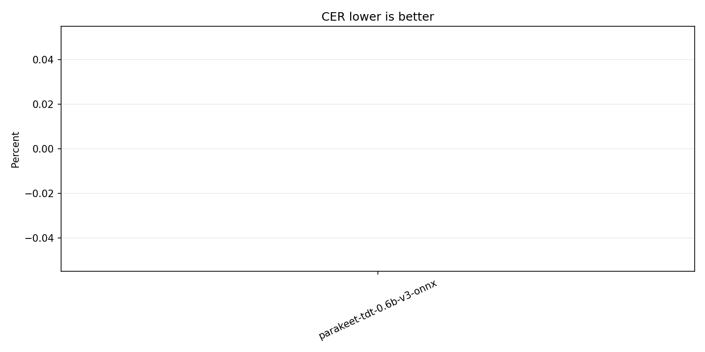
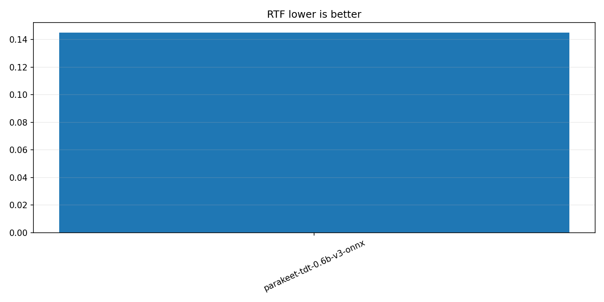
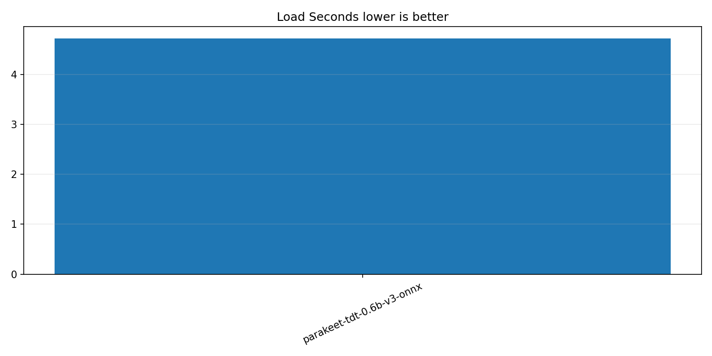
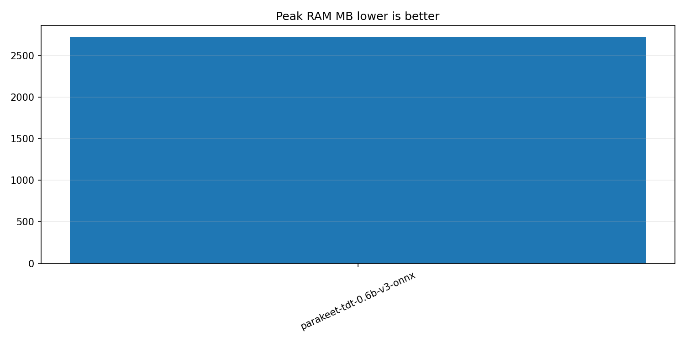

Dataset: hf-internal-testing/librispeech_asr_dummy / validation. Lower WER, CER, RTF, load time, and RAM are better.




| Model | Engine | Status | Device | WER | CER | RTF | Load s | Peak RAM MB | Error |
|---|---|---|---|---|---|---|---|---|---|
| parakeet-tdt-0.6b-v3-onnx | ONNX Runtime via onnx-asr | ok | cpu:onnxruntime | 0.00% | 0.00% | 0.15 | 4.72 | 2724.26 |